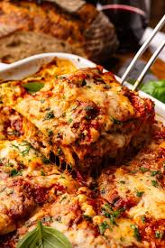

Home
Lasagna

Description:
A gloriously layered Italian masterpiece, made up of creamy bechemel sauce and rich bolognaise ragu.
Simply layer pasta with alternatine red and white sauce.
Ingredients:
- Pasta sheets
- Beef mince
- Onion
- Garlic
- Tomato
- Flour
- Milk
- Cheese
Steps:
- Fry some onions and garlic
- Add beef mince
- Add tomato
- Cook down
- In another pan, heat up some flour, to make a rue
- Add milk in small parts
- Once a sauce has formed, add cheese
- Soften some pasta sheets
- In a baking dish, add a layer of pasta, then ragu, pasta, then bechemel
- Repeat until dish is full or everything is used
- Sprinkle some grated cheese on top
- Cover with foil and bake at 180 degress centigrage for 40 mins
- For the last 10 mins, remove the foil